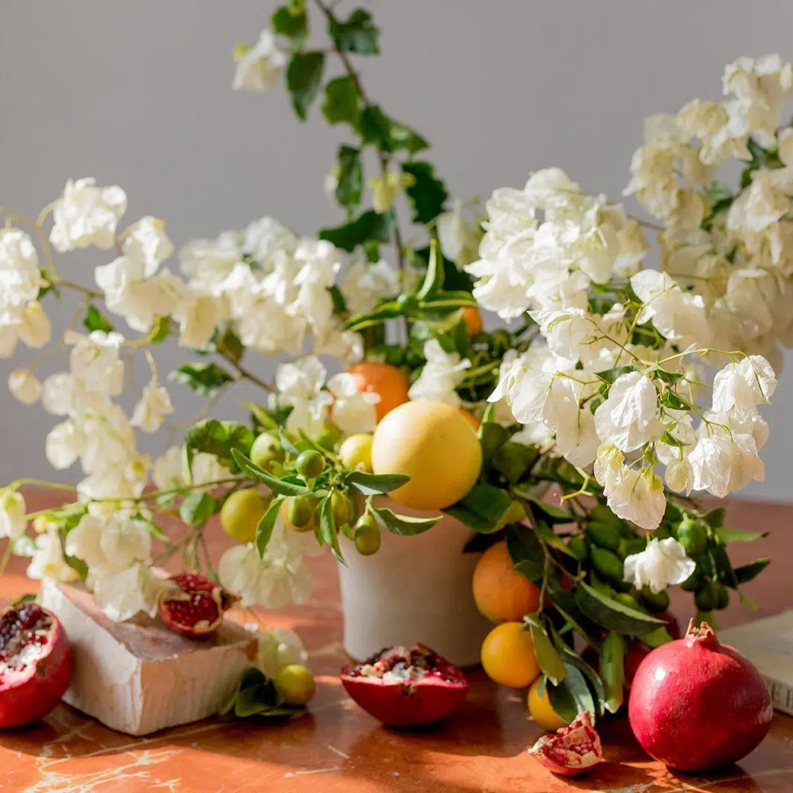
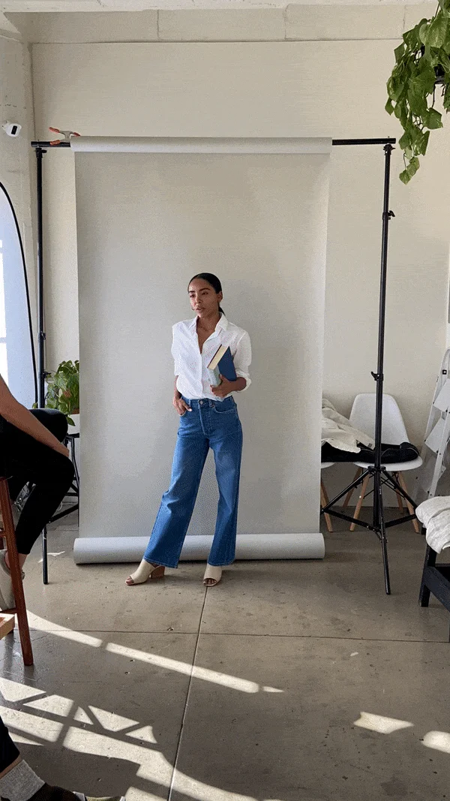

<main class="main">
  <div class="container">
    <div class="post-wrapper">
      <div class="about">
        <div class="about__header">
          <h1 class="about__title">About The Good Trade</h1>
          <h3 class="about__subtitle">
            The Good Trade is a Los Angeles-based, independent lifestyle media
            brand providing over 100M readers with editorials on sustainability,
            slow living, and self-care. 💛
          </h3>
          <h2>Our Mission</h2>
          <p>
            Founded in Los Angeles in 2014, our mission is to serve, nurture,
            and inspire our readers with meaningful content about the issues
            that matter for an intentional life.
          </p>
          <p>
            Our website and daily newsletter of 225,000 subscribers have been
            featured in Forbes, Fast Company, TechRadar, New York Magazine, and
            many more, as a beloved women’s media brand—one that recognizes that
            in order to care for the planet and your community, you must also
            care for yourself.
          </p>
        </div>
        <div class="about-img">
          
          
          
        </div>
      </div>
      <h3 class="center">From Our Community</h3>
      <div class="about__content">
        <p class="cs center">
          “I LOVE THE GENTLE KINDNESS AND PRACTICAL INSIGHT THAT THE GOOD TRADE
          OFFERS. THE WEBSITE IS MY FIRST GO-TO WHEN SEARCHING FOR SUSTAINABLE
          BRANDS.”
        </p>
        <p class="cs center">
          “THE GOOD TRADE’S NEWSLETTER IS A TREASURED AND ESSENTIAL PART OF MY
          DAILY ROUTINE! I CHERISH ITS INCLUSIVITY, DIVERSITY, AND WARMTH.”
        </p>
        <p class="cs center">
          “FINALLY! A WOMEN’S MEDIA COMPANY THAT MAKES ME FEEL GOOD ABOUT
          MYSELF. A LOST ART WHEN YOU ARE CONSTANTLY BEING TOLD TO LOOK BETTER,
          BE BETTER, AND BUY MORE.”
        </p>
        <p class="cs center">
          “I LOVE THE HIGHLY CURATED CONTENT ON SUSTAINABLE LIVING—EVERY ARTICLE
          IS LIKE GETTING RECOMMENDATIONS FROM A TRUSTED FRIEND.”
        </p>
      </div>
    </div>
  </div>
</main>
